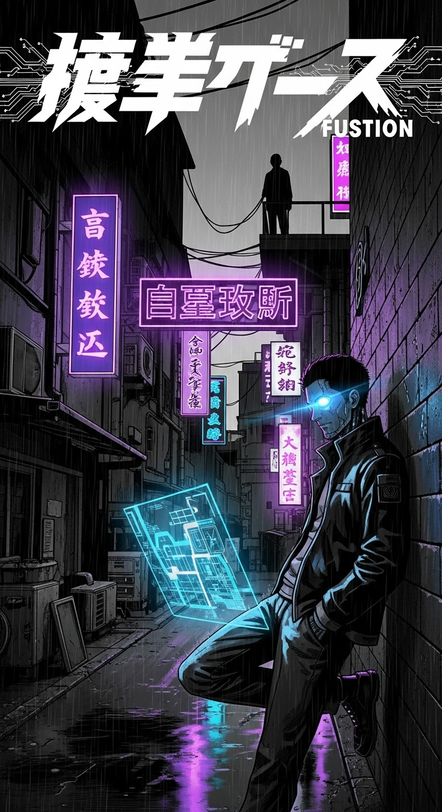

Isekan
Um mangá de ação e aventura, com um protagonista que viaja para outro mundo, cheio de desafios e poderes incríveis.
Capítulos: 5


Um mangá de ação e aventura, com um protagonista que viaja para outro mundo, cheio de desafios e poderes incríveis.